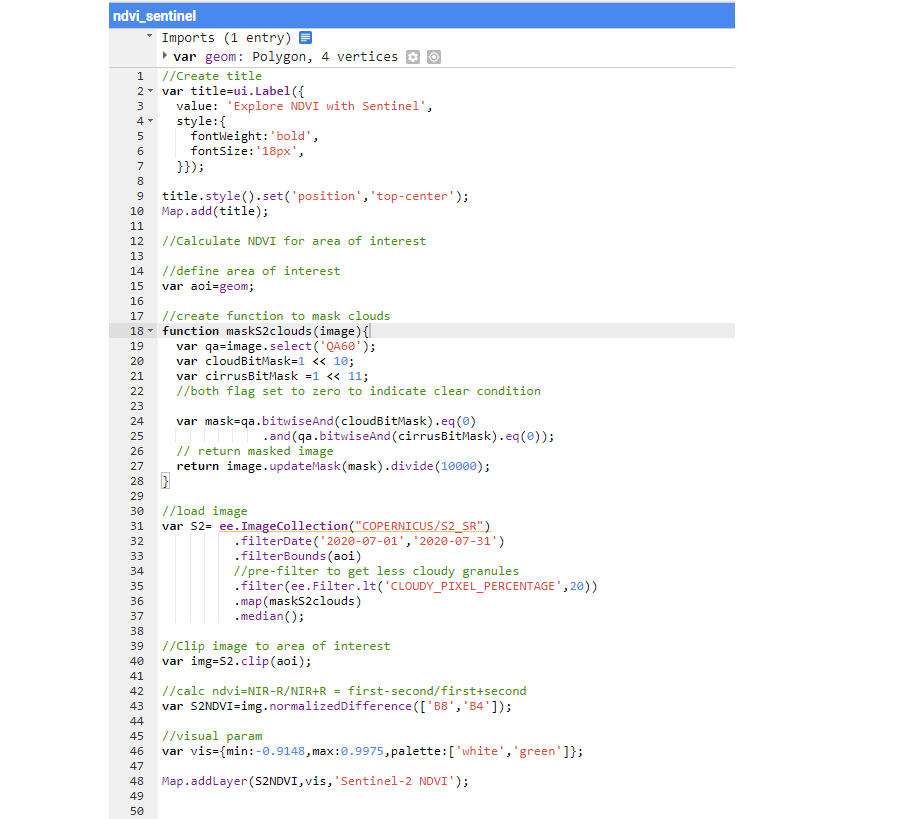

Lavanya Gopal
GIS | Data Science | Remote Sensing | Engineering
Toggle navigation
Home
Resume
Blog
NDVI Using GEE

 Lavanya Gopal
GIS | Data Science | Remote Sensing | Engineering
Lavanya Gopal
GIS | Data Science | Remote Sensing | Engineering